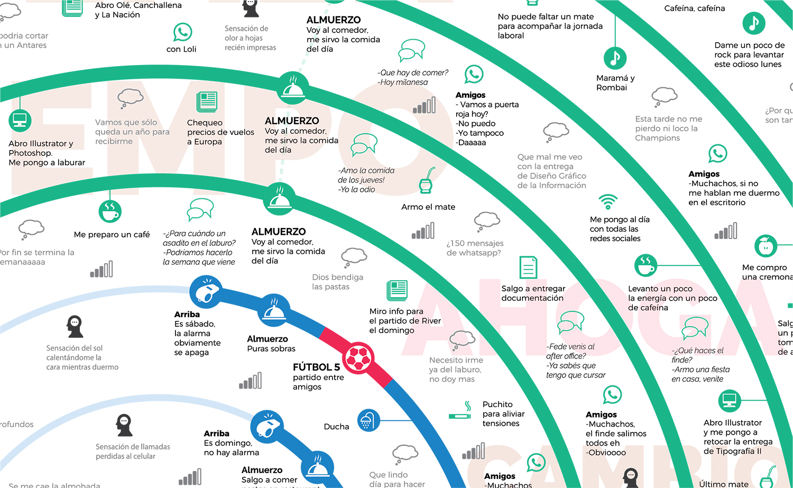
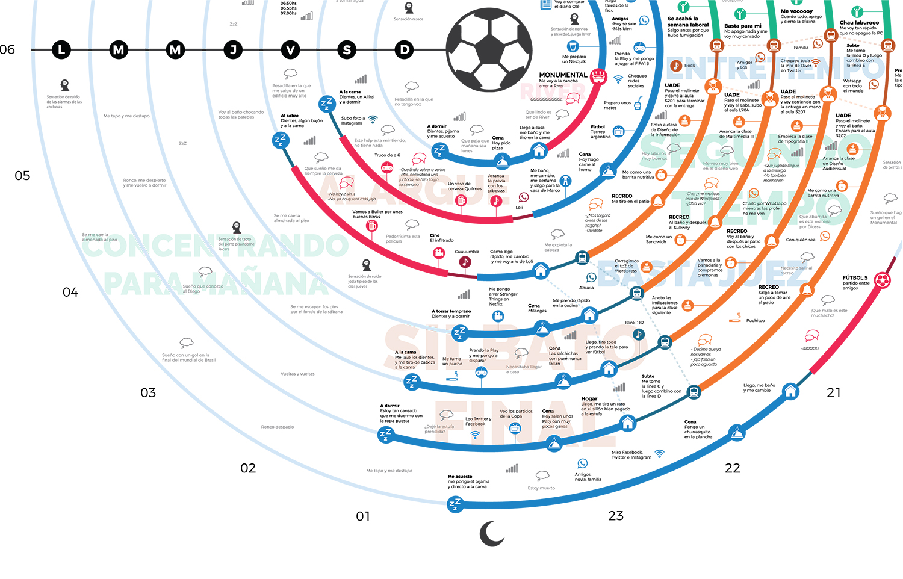

Mi
Semana_
Plasmar en un papel las actividades que uno realiza todos los días no es tarea fácil. Esta infografía busca la forma mas simple de transmitir semejante cantidad de información. La manera más eficiente de armarla es abarcando días y horarios tratando de optimizar espacios con trabajos visuales y tipográficos. En este caso opté por un sistema circular donde todo gira alrededor de una pelota de fútbol (por su morfología y justamente lo que representa en mi vida).


